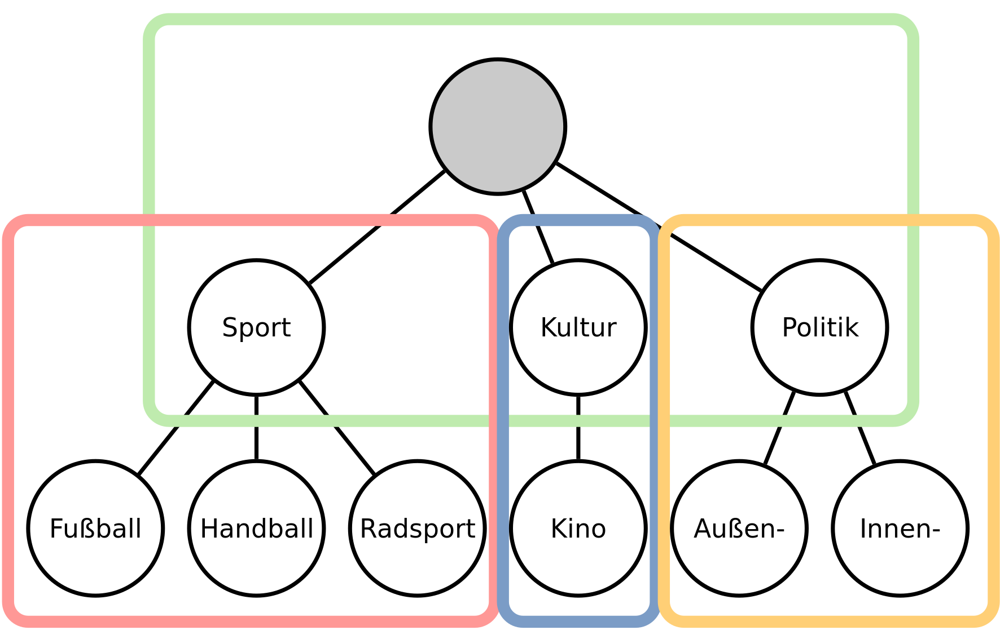

MAGDa - Management und Analyse Geotemporaler Daten
Text Klassifikation von Newsbeiträgen
Posted am 19.12.2017Auch abseits der Verkehrsauswertung fallen große Mengen an Daten an. So zum Beispiel werden in sozialen Netzwerken, in Foren oder Blogs täglich Unmengen an Inhalten generiert. Um dieser Flut bei der Suche nach relevanten Texten Herr zu werden, wird überlicherweise auf Suchmaschinen zurückgegriffen. Aber wäre es nicht schöner, statt der händischen Suche, die Texte einfach ihrer Thematik zuzuordnen, und so alle zum Thema "Radsport" passenden Texte zu finden, unabhängig davon, wie oft das Wort "Fahrrad" auftaucht?
Mit dieser Fragestellung habe ich mich in meiner Masterarbeit auseinandergesetzt. Auf Basis von etwa 7.500 Nachrichtentexten von SpiegelOnline und der dort angegebenen Rubriken wurde versucht, eine Klassifikation zu entwickeln. Dabei stand zwar der Vergleich zweier Machine-Learning-Verfahren im Vordergrund, allerdings soll nachfolgend kurz beschrieben werden, wie man mit hierarchisch angeordneten Textklassen umgeht und wie man darauf Klassifikatoren ansetzt.
Viele Klassen, wenig Daten
Auch wenn sich 7.500 Texte nach einem großen Datensatz anhören, ist noch eine zweite Zahl entscheident. Die Anzahl der Rubriken, auf die sich diese Texte verteilen. Da die Redaktion bei SpiegelOnline mit ihren Rubriken sehr kreativ war, existieren über die drei Ebenen der Hierarchie hinweg weit über 3.000 Rubriken. Ohne große Mathekenntnisse sieht man, dass pro Rubrik nicht viele Texte übrig bleiben. Im Allgemeinen sollte man darauf achten, dass bei einer Klassifikation in jeder Klasse ausreichend viele Beispieldaten vorhanden sind. Jetzt ist "ausreichend" natürlich von vielen Faktoren abhängig. Eine handvoll Daten sind aber in den seltensten Fällen genug.
In der Abbildung oben ist ein Ausschnitt der Hierarchie zu sehen, jeweils mit Namen und der Zahl der Texte, die sich in ihr befinden. Natürlich haben "Wissenschaft" und "Natur" noch deutlich mehr Unterknoten, aber zur Veranschaulichung reicht obige Darstellung.
Um jetzt weniger Rubriken und gleichzeitig mehr Texte in den verbleibenden Rubriken zu erreichen, bedient man sich der Haupteigenschaft einer Hierarchie: Alle Elemente der Klasse X sind gleichzeitig auch Elemente der Elternklassen von X. Demnach könnte man alle Texte aus dem Beispiel in die Rubrik "Wissenschaft" verschieben und die Zuordnung wäre immer noch korrekt.
Für die Masterarbeit wurde ein Schwellwert von 15 Texten eingesetzt. Also alle Rubriken mit weniger als 15 Texten wurden aufgelöst und die Texte in die übergeordnete Rubrik verschoben. Im Beispiel wären die Klassen "Katzen" und "Wald" entfernt und die 7 Texte in die Rubrik "Natur" verschoben worden. Durch diese Zusammenlegung reduzierte sich die Zahl der Rubriken bei den Daten von SpiegelOnline deutlich, auf 120.
Klassifikationsansätze
Für die Klassifikation wurden in der Masterarbeit zwei Ansätze verfolgt. Die einfachste Variante ist die globale Klassifikation (sie hat noch andere Namen, das Konzept bleibt aber gleich): Es gibt einen Klassifikator, dieser kennt alle 120 Rubriken und bestimmt auf einen Schlag die Klasse eines neuen Texts. Der Ansatz ist einfach umzusetzen und liefert auch schnell brauchbare Ergebnisse. Aber die Hierarchie ist hier irrelevant, für den Klassifikator sind alle Klassen atomar.
Im Gegensatz dazu gibt es die lokale Klassifikation. Dies ist der Oberbegriff vieler verschiedener Varianten, aber eines haben sie gemein: Es existieren mehrere Klassifikatoren, die jeweils nur einen Teil der Rubriken kennen und klassifizieren können. Mit ihnen kann also auch eine Hierarchie beachtet werden. Viele dieser Ansätze erwarten allerdings, dass ein Datensatz einzig und allein einem Blattknoten zugeordnet werden kann. Im Fall meiner Masterarbeit gab es nach der gezeigten Zusammenlegung im Gegensatz zu vielen anderen Problemstellungen auch Nicht-Blattknoten mit Daten.
Es wurde deshalb eine Variante herangezogen, welche diese Bedingung erfüllt, aber trotzdem leicht zu erstellen war. Es wird für jeden "Elternknoten" ein Klassifikator erzeugt, der den Elternknoten und die Kinder abdeckt.
Beim Training eines Klassifikators werden nur die Trainingsdaten benötigt, die dem Elternknoten untergeordnet sind. Dementsprechend braucht nur der Hauptklassifikator (mit der Wurzel als Elternknoten) alle Trainingsdaten. Hier ist zu beachten, dass die Kindknoten auch alle untergeordneten Daten enthalten. Für das Training des ersten Klassifikators zählen also "Fußball", "Handball" und "Radsport" zur Klasse "Sport". Da später die Klassifikation von "oben" nach "unten" erfolgt, ist diese Gruppierung wichtig.
Vereinfacht gesprochen: Der grüne Klassifikator kennt den Unterschied zwischen "Sport", "Kultur" und "Politik". Der rote Klassifikator kennt alle Sportrubriken. Der blaue Klassifikator weiß, ob ein Text zur Rubrik "Kino", oder doch nur zur allgemeinen "Kultur" gehört, usw.
Wird ein neuer Text klassifiziert, werden ausgehend vom Wurzelknoten die Klassifikatoren durchlaufen. Nehmen wir an, wir haben einen Text zum Thema "Volleyball". Dieser wäre in der gezeigten Hierarchie unter "Sport" zu finden. Der erste Klassifikator würde für diesen Text vermutlich "Sport" als Antwort liefern, genauer kann dieser ja nicht klassifizieren. Ausgehend vom "Sport"-Knoten wird nun der (in der Abbildung rote) Klassifikator genutzt, welcher den Hierarchie-Ast unter "Sport" abdeckt. Dieser kennt nur die vier gezeigten Klassen und würde dem Beispieltext die Klasse "Sport" zuweisen.
An dieser Stelle wäre die Klassifikation beendet. Prinzipiell wird also in der Hierarchie hinabgestiegen, wobei auf jeder Ebene ein lokaler Klassifikator den weiteren Pfad vorgibt. Die Klassifikation endet, wenn entweder ein Blattknoten erreicht wird, oder ein Klassifikator (wie im Beispiel) seinen Elternknoten als Antwort liefert.